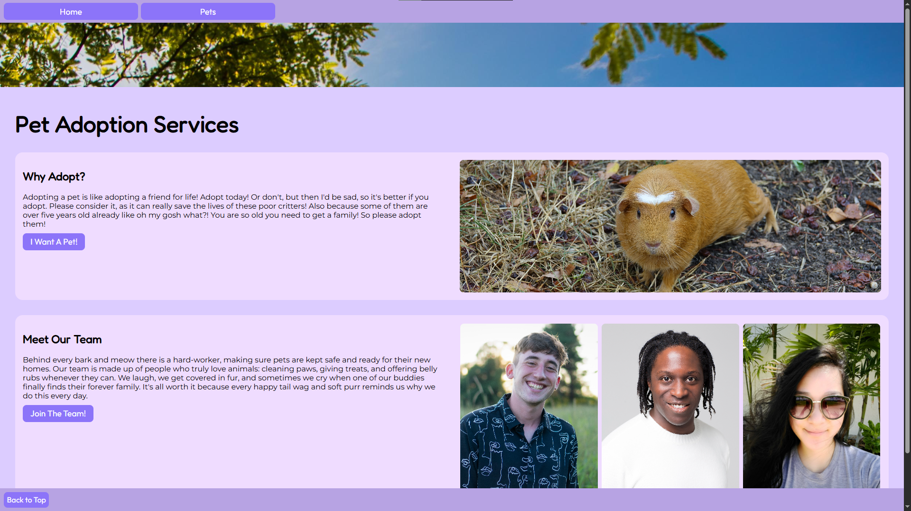
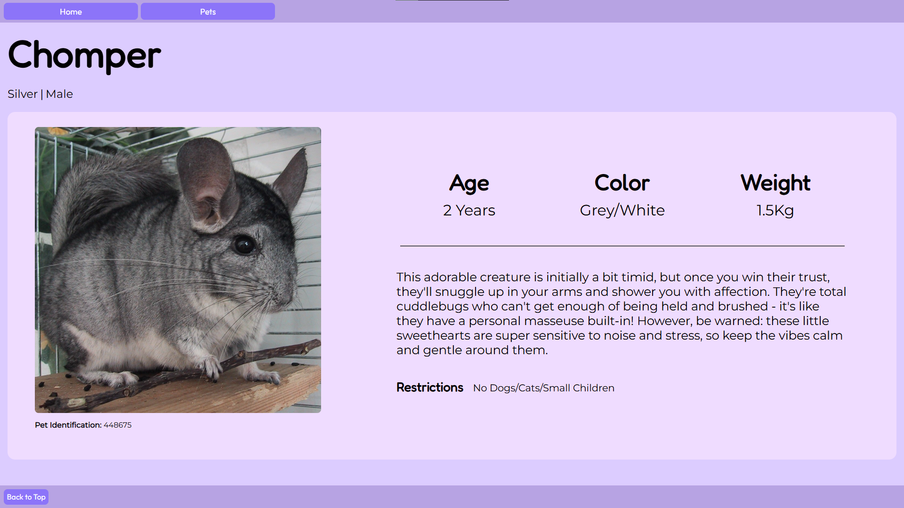

Pet Adoption Services

Course & Date IAT 235 - Information Design - December 2025 (Fall 2025 Term).
Collaborators Aiden, Eric.
Tools Used VS Code, GitHub and sketching.
Programming Languages Used HTML5, CSS3, and JavaScript.
Project Objective The task was to make a website that would be user-friendly and accessible for pet adoption services.
Why This Was a Problem Sites have lots of tabs and too many buttons to click. How can we create a simple user flow that is no complicated, and easy to follow?
- My Role & Contributions
- ● Developed the main stylesheet structure for both content and grid.
- ● Designed clickable elements for user interaction, making sure each button is the same throughout for consistency.
- ● Chose the font and theme of the website to ensure a cohesive and appealing visual experience.
- ● Chose the images used throughout the site to complement the overall design and theme using only copyright-free images from Wikimedia.

- Challenges & Adaptations
- ● Grids and layout adjustments for different screen sizes.
- ● Image optimization for faster loading times and better performance as some images were large.
- Key Insights
- ● Visually appealing design helps the user flow better through the website.
- ● Consistent navigation improves usability.
Reflection If I revisited this project, I would rework how images fit in the layout to ensure better visual harmony between the color palette of the website and the strong color of the photos.